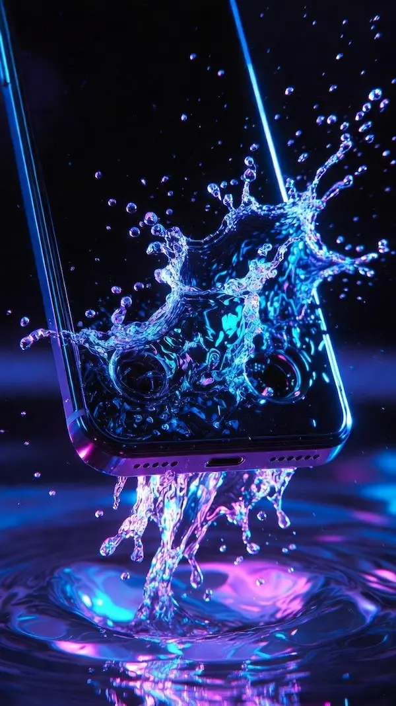
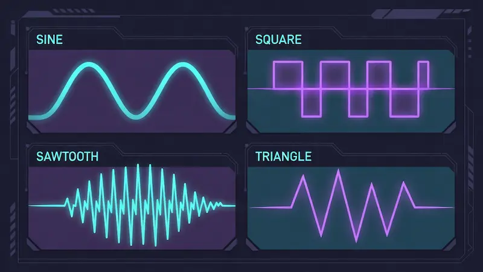

Frequency Gen Ultra Max
Studio-Quality Tone Generator, Binaural Beats, Sweep Tests & Noise — No Ads, No Install.
The Science: How This Tool Works
Unlike simple MP3 players, Frequency Gen Ultra uses the Web Audio API to generate sound waves mathematically in real-time on your device's processor. This ensures zero compression artifacts and mathematical precision. Whether you set it to 432 Hz or 15,000 Hz, the signal is generated instantly without downloading any files, ensuring complete privacy and offline capability.
Complete User Guide: How to Master This Tool
New to frequency generation? Whether you are an audio engineer or just trying to fix a wet speaker, here is the simplest way to use the Frequency Gen Ultra features effectively.
1. Generating Custom Tones (Signal Lab)
- Go to the "Signal Lab" tab. This is your main workspace.
- Select a Waveform: Choose Sine for a pure tone (best for hearing tests) or Square for a loud, buzzy signal.
- Set Frequency: Drag the slider or use the + / − buttons for fine-tuning. You can also select a "Smart Preset" from the dropdown menu.
- Click the big Play Button to start. Adjust the Master Volume carefully to avoid sudden loud noises.
How to Eject Water from Speakers

- In the "Signal Lab" tab, select the Square Wave (this provides the strongest vibration).
- Set the frequency slider manually to 165 Hz.
- Increase your device volume to Maximum.
- Hit Play and hold your phone vertically for 10–15 seconds. You should see water droplets bouncing out of the speaker grill.
Testing Subwoofers (Auto Sweep)
- Switch to the "Auto Sweep" tab.
- To test bass, set Start Freq to 20 Hz and End Freq to 200 Hz.
- Set the Duration to 10 seconds for a slow, detailed scan.
- Press Play. Listen carefully as the pitch rises. If the sound disappears or the speaker rattles at a specific point, you may have a "dead spot" in your room or a loose component.
Focus & Meditation (Binaural Beats)
Requirement: You must wear stereo headphones for this to work.
- Open the "Binaural" tab.
- For Relaxation (Theta Waves): Set Base Frequency to 200 Hz and Beat Frequency to 4 Hz.
- For Focus (Beta Waves): Set Base Frequency to 250 Hz and Beat Frequency to 14 Hz.
- Close your eyes. Your brain will synthesize a third tone (the beat), helping you shift your mental state.
Recording Your Audio
Want to save a specific noise color or tone for later? While the sound is playing,
click the small Microphone Icon (Record Button). Let it run for as
long as you need, then click it again. The tool will instantly download a high-quality
.wav or .webm file to your device.
Understanding Waveforms
Different shapes sound different. Here is a visual guide:

- Sine Wave: The purest tone. Smooth and clean. Best for hearing tests and tuning instruments.
- Square Wave: Harsh and buzzy. Rich in harmonics. Used for "Water Eject" and aggressive signaling.
- Sawtooth Wave: Buzzy like a string instrument. Used in music synthesis and testing distortion.
- Triangle Wave: Softer than Square but brighter than Sine. A balanced tone.
"Water Eject" for Speakers
Did your phone get wet? You can use this tool to push water out of the speaker grill. Select the Square Wave and set the frequency to 165 Hz. Turn the volume to maximum. The strong vibrations of the square wave physically push air (and water droplets) out of the mesh. Run this for 10–15 seconds.
Testing Subwoofers & Bass
Bass capability is a key sign of speaker quality. Use the Auto Sweep mode. Set Start: 20 Hz, End: 100 Hz, Duration: 10 s. Play it on your system. If you hear rattling noises or the sound disappears at certain frequencies (e.g., 40 Hz), it indicates enclosure resonance or that your speakers cannot handle sub-bass frequencies.
Tinnitus Masking Therapy
Tinnitus (ringing in the ears) can be debilitating in silence. "Sound Masking" is a proven relief method. Go to the Noise Gen tab and select White Noise or Pink Noise. Adjust the volume until it barely covers the ringing sound. This gives your brain a different signal to focus on, reducing stress and helping you sleep.
Brainwave Entrainment (Binaural Beats)
This technique uses two slightly different frequencies played in each ear to alter brain states. For example, if Left Ear = 200 Hz and Right Ear = 204 Hz, your brain processes the difference (4 Hz). This 4 Hz corresponds to Theta Waves, associated with deep relaxation and meditation. Note: You must use stereo headphones for this to work.
Why Pink Noise for Sleep?
White noise sounds like static (TV fuzz) and can be harsh. Pink Noise is deeper; it has reduced high frequencies. It sounds like heavy rain, wind, or rustling leaves. Studies show Pink Noise is more effective for deep sleep because it masks sudden noises (like a door slamming) without being annoying itself.
Musician's Tuning Fork
Physical tuners can get lost or run out of batteries. This tool is a permanent, perfect reference. Set the generator to 440 Hz (Sine) to tune your guitar's A string to standard concert pitch. Some musicians prefer 432 Hz, believing it to be a more "natural" resonance. You can test both here.
Headphone "Burn-In"
Audiophiles believe new headphones have stiff drivers that need to "loosen up." Instead of playing music for 100 hours, play Pink Noise or a 20 Hz–20 kHz Sweep on a loop at moderate volume. This exercises the full range of the driver diaphragm efficiently.
The "Mosquito Tone" Hearing Test
Human hearing degrades with age, especially high frequencies (Presbycusis). Start the generator at 8,000 Hz and slide it up. Most teens can hear up to 17 kHz. If you stop hearing sound around 12 kHz, it's a normal sign of aging. Warning: Keep volume low to protect your ears during this test.
Finding Room "Dead Spots" & Bass Traps
Have you ever noticed that bass sounds louder in the corner of your room but disappears in the center? This is called "Room Modes." You can use our Auto Sweep feature (set from 40 Hz to 200 Hz) to walk around your room and identify these spots. This is crucial for placing your home theater subwoofer or studio monitors correctly for the flattest frequency response.
The "Womb Effect" for Crying Babies
Newborns are used to the loud, rushing sound of blood flow inside the womb. Sudden silence can actually be stressful for them. Using the Brown Noise generator at a moderate volume creates a deep, rumbling sound that mimics the womb environment. Many parents find this instantly calms a fussy baby and helps them drift off to sleep faster than lullabies.
Exploring Solfeggio Frequencies (528 Hz & 852 Hz)
Beyond standard physics, many users believe in the spiritual resonance of specific tones. 528 Hz is often called the "Love Frequency" or "Miracle Tone," believed to repair DNA. 852 Hz is associated with awakening intuition. While scientifically debated, you can easily generate these exact frequencies using the "Manual Mode" to use as a backdrop for yoga or meditation sessions.
Silent Dog Whistle Training
Dogs can hear frequencies much higher than humans (up to 45 kHz). You can use this tool as a digital dog whistle. Set the frequency to around 15,000 Hz–20,000 Hz (Sine Wave). If you can't hear it but your dog's ears perk up, you've found the sweet spot. Use short bursts to train commands without disturbing your neighbors.
DIY Science: Visualizing Sound (Cymatics)
Want to see sound? Place a thin metal plate or a plastic wrap stretched over a bowl on top of a speaker. Sprinkle salt or sand on it. Play a Sine Wave and slowly increase the frequency. At specific pitches (resonant frequencies), the sand will magically arrange itself into beautiful geometric patterns. This is a fantastic physics experiment for students.
Checking Speaker Polarity (+/−)
If your speakers are wired incorrectly (positive to negative), the sound waves will cancel each other out, killing the bass. Play a steady 60 Hz Sine Tone. If the bass sounds weak, try swapping the wires on one speaker. If the bass suddenly gets louder and fuller, your speakers were "out of phase," and you just fixed it for free.
Audio Privacy & Conversation Masking
In open-plan offices or thin-walled apartments, privacy is an issue. Playing Pink Noise adds a layer of background sound that fills in the gaps between human speech frequencies. This makes it much harder for others to overhear your conversations and protects your privacy during sensitive calls.
Why Brown Noise is Trending for ADHD
Unlike White Noise (which is static) or Pink Noise (which is balanced), Brown Noise lowers the higher frequencies even more drastically. It sounds like a distant waterfall or heavy thunder. Many people with ADHD report that this deep, rumbly texture helps "quiet the internal monologue" better than any other sound, aiding in hyper-focus tasks.
Cleaning Dust from Mesh Grills
Over time, earphone and phone speaker grills get clogged with fine dust. Just like water ejection, you can use a Sawtooth Wave at varying low frequencies (100 Hz–250 Hz) to dislodge dry dust particles. The sharp edges of the sawtooth wave create a more aggressive mechanical vibration than a smooth sine wave.
Testing Microphone Sensitivity
If you are a streamer or podcaster, you need to know if your mic picks up background hums. Play a 10 kHz tone at low volume and check your recording software's visualizer. If your mic picks it up easily but your voice sounds muddy, you may need to adjust your EQ settings to boost the "presence" range (3 kHz–5 kHz) using our generator as a reference guide.
Precise Guitar Tuning by Ear
Electronic tuners are great, but training your ear is better. Use the manual slider to generate the exact notes for standard tuning: E (82.4 Hz), A (110 Hz), D (146.8 Hz), G (196 Hz), B (246.9 Hz), E (329.6 Hz). Play the tone and pluck the string simultaneously; listen for the "wobble" (beat frequency) to disappear to know you are perfectly in tune.
What is LFO and Why Use It?
LFO stands for Low-Frequency Oscillation. It's a secondary sound wave that is too low to hear, but it modifies the main sound. In our tool, enabling LFO creates a "vibrato" or siren effect. Sound designers use this to create sci-fi textures, alarm sounds, or to test how audio compressors react to fluctuating signals.
40 Hz Gamma Waves & Cognitive Function
Recent studies suggest that listening to a 40 Hz tone (or a 40 Hz binaural beat) may stimulate Gamma brainwaves. These waves are associated with high-level cognitive processing, memory recall, and focus. Use the Binaural mode with a 200 Hz base and a 40 Hz beat difference to experiment with this cognitive booster.
Checking for Harmonic Distortion
A pure Sine Wave should sound smooth. If you play a sine wave at 60 Hz or 100 Hz and hear a "buzzy" or "scratchy" sound overlaying the low tone, your speakers or headphones suffer from Harmonic Distortion. This usually means the driver is damaged or the amplifier is being pushed too hard (clipping).
The Earth's Heartbeat (Schumann Resonance)
The Earth's electromagnetic field resonates at approximately 7.83 Hz. While human ears cannot hear this low frequency directly, you can generate it using our Binaural Beats mode (e.g., Left: 100 Hz, Right: 107.83 Hz). Many meditation practitioners use this frequency to feel "grounded" and connected to nature.
Setting Your Subwoofer Crossover
The "Crossover" is the point where your subwoofer stops playing and your main speakers take over (usually 80 Hz). Play a specific tone at 80 Hz using this tool. Walk around the room. If the sound is boomy or weak, adjust your crossover dial on the subwoofer amp until the transition between the sub and speakers sounds seamless and unified.
Stress Testing Headphones
Before using new headphones for mixing or mastering, checking for manufacturing defects is wise. A slow, high-volume (be careful!) Sine Sweep from 20 Hz to 20 kHz will reveal any rattles, buzzes, or channel imbalances that shouldn't be there. If the sound shifts from left to right unintentionally, the drivers are not matched pairs.
Why Square Waves Sound So Loud
You might notice the Square Wave sounds much louder than a Sine Wave at the same volume. This is because a Square wave contains the fundamental frequency plus every odd harmonic (3rd, 5th, 7th, etc.). This richness makes it perfect for synthesizing retro video game sounds (chiptune) or cutting through background noise for alarms.
Sound Design & Foley Art
Need a sound effect for a video? You don't always need a library. You can create wind by filtering White Noise. You can create a "laser zap" by using a Sawtooth Wave and sliding the frequency quickly from high to low. This tool is a basic synthesizer that can be the starting point for creative audio projects.
Low Latency Performance
Because this tool uses the AudioContext directly within your browser, it has near-zero latency compared to streaming video or audio files. This makes it accurate enough for timing experiments in physics labs where the speed of sound is being measured between a speaker and a microphone.
Initializing secure discussion portal...